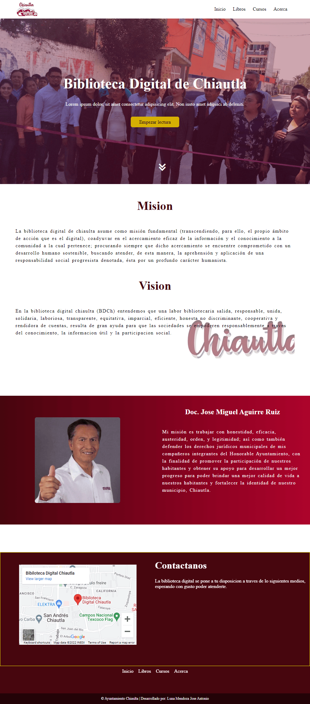
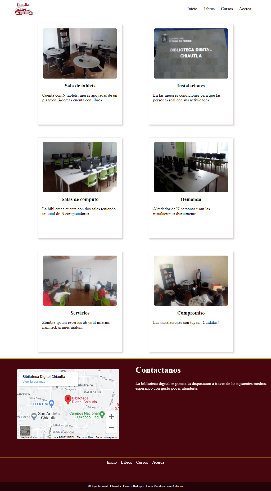
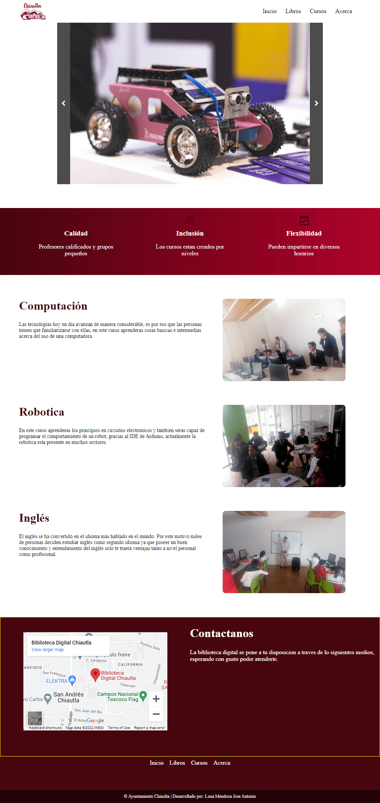
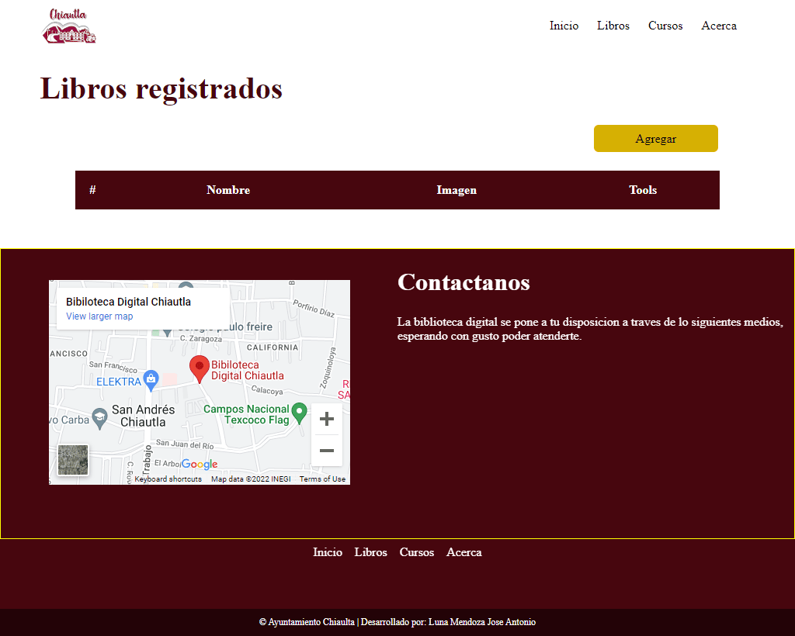
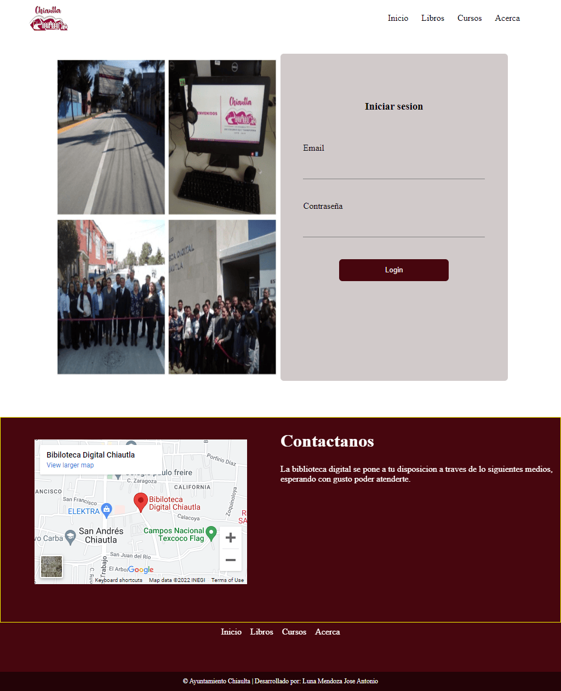

H. Ayuntamiento Chiautla
Sitio biblioteca digital / Desarrollador Web
Duración
Junio 2022 - Enero 2024
Tecnologías usadas
Angular, HTML, CSS, BOOTSTRAP, Firebase Realtime Database, Firebase Hosting, JSON.
Team
- Enrique - Jefe de proyecto
- Marco - Gestor de contenido
Descripción general del puesto
El objetivo principal del proyecto era acercar a la comunidad del municipio a la nueva biblioteca digital.
- Diseño e implementación de un sitio web para acercar a la comunidad a la era digital.
- Asesorar al equipo de trabajo en temas de desarrollo y mantenimiento.
- Desarrollo del login de administrador incrementando la seguridad de los libros digitales y el contenido expuesto.
- Integración, Modelado y consumo de una API.
Entregables




